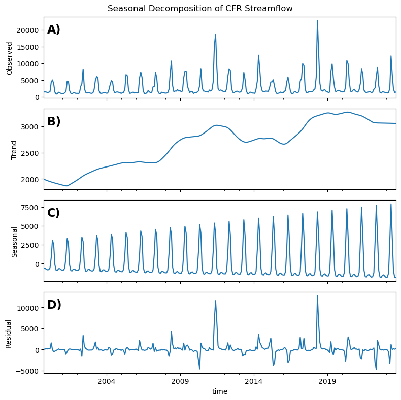

| Source | Inflow (af/yr) | Percent of Total |
|---|---|---|
| Clark Fork River | 192000 | 0.827586 |
| Creek Drainages and Tertiary Hillsides | 19000 | 0.081897 |
| Lateral Underflow (Bitterroot and Hellgate) | 21000 | 0.090517 |
| Total | 232000 | nan |
Missoula Aquifer Sustainability Study
Introduction
The Missoula Aquifer is one of only 64 designated sole source aquifers in the United States.1 As such, it supplies over 75,000 residents, plus businesses, with potable groundwater. Historically, the aquifer has shown incredible resilience to drought and increases in population within the Missoula valley area. There have been no long-term signs of depletion in any of the 27 monitoring wells within the aquifer. This is likely due to the very high transmissivity rates, location within the Clark Fork and Bitterroot watersheds, reasonable historical growth rates of the surrounding population, and only mild changes in historical climate (Whitlock et al. 2017).
Due to the unconfined nature of the aquifer and the high transmissivity rates of the substrate, the upstream inflows, and downstream outflows, of the aquifer are largely driven by the Clark Fork River (Tallman 2005; Miller 1991). In fact, according to previous studies, the Clark Fork River provides over 80% of the annual aquifer recharge (Table 1). Thus, it is fair to say that any long-term changes in streamflow will likely have far reaching impacts to the recharge and overall sustainability of the aquifer.
Climate change is expected to impact the Clark Fork River in numerous ways over the coming decades (Whitlock et al. 2017). Average annual discharge is projected to increase, although there is large uncertainty around this projection. With higher confidence, there is expected to be a shift in the timing of peak runoff leading towards lower baseflows in the summer months. In addition, when future drought occurs, the severity is expected to increase, resulting in extended periods of drier than normal conditions (Montana DNRC 2023). These projected changes will undoubtedly affect the groundwater of the Missoula Aquifer and the impact of the local extractions for drinking water, irrigation, and industrial purposes.
From 2000 to 2024 the Missoula area population has increased from 57,000 to 78,000, respectively.2 Using the standard assumption of 160 gallons/day/person, we estimate that water use has increased from 10,200 af to 14,100 af over this same time period (Figure 1). Consequently, according to the Montana Ground Water Information Center3 there are currently over 3,500 wells listed in the Missoula area. Of those wells, 247 are labeled as “public water” which includes the City of Missoula’s water supply (Figure 2). Population in the Missoula area is expected to continue to increase over the next several decades4 likely leading to more wells and higher extraction rates to sustain this growth. In spite of the historical resilience of the aquifer to these changes, many questions still remain unanswered.

What if climate change and population growth converge to maximize stress on the aquifer? While these kinds of scenarios are not determined, they are all well within the realm of realistic possibilities, perhaps even probable. Given the overall resilience that we have seen in the past, it is possible that the aquifer can withstand these stressors and continue to deliver clean and plentiful potable water to the Missoula community in perpetuity. However, to date, no one has studied these different scenarios to make sure that our future water resources are protected. In this analysis, we first evaluate the long-term historial trends in Clark Fork River discharge, City of Missoula pumping rates, and Missoula Aquifer water table depth. In subsequent analyses (not inlcuded in this preliminary report) we plan to specifically study the impacts of plausible future scenarios on the Aquifer to identify critical tipping points and mitigation strategies.
Methods
Study Area
The study area includes the greater Missoula area. Within this region there are 16 monitoring wells used in the analysis Figure 3.

Data Imputation
Historical groundwater measurements from the 16 sites were taken sporadically and inconsistently (Figure 4). Therefore, in order to compare across all sites we needed to fill the data gaps and resample to monthly average values. We gap-filled the data using a multiple linear regression imputation method based on the Clark Fork River monthly average flow and the day of the year (i.e. last day of the month) to create consistent monthly data across all water years (2000-2023) in each monitoring well used in the study. We tested several other methods including linear interpolation, time-based interpolation, and seasonal trend decomposition using LOESS (STL) by iterating the method 100 times and leaving out 5 known data points to later predict with the model. The multiple linear regression data imputation method proved to have the best error statistics across the all metrics (MAE, MSE, RMSE, MAPE, and R-squared).

Historical Analysis
Clark Fork River
The Clark Fork River serves as the main source for aquifer recharge in the Missoula Valley (Tallman 2005). While other inputs exist, we focus almost exclusively on the Clark Fork due to the overall magnitude relative to other inputs, and the high temporal correlation between all inflows. A seasonal decomposition using LOESS (Cleveland et al. 1990) shows that there has been a consistent increasing trend in monthly average flows over the study period (2000-2023; Figure 5). In addition, as expected, there is a strong seasonality component with peak flows coming in late spring and baseflows in late summer and early fall. The seasonality is increasing suggesting a trend in interannual variability.

We investigate the trend further using a Mann-Kendall statistical significance test (Mann 1945; Kendall 1975), which avoids assumptions of normality and independence. The results indicate a statistically significant (\(p<0.5\)) increasing trend of 24 cfs/month. We further break down the trend analysis into seasons: winter (December, January, February), spring (March, April, May), summer (June, July, August), and fall (September, October, November) (Figure 6). All four seasons have increasing trends, although the summer season’s trend is not statistically significant at the \(p<0.5\) level.
Groundwater Table Depth
We evaluated trends in groundwater table depth for each of the 16 wells within the study site using the Mann-Kendall test. All 16 wells have significantly increasing trends and strong seasonality similar to the Clark Fork River streamflow (Figure 7).
Additionally, we calculated the 10th, 50th, and 90th quantile regression lines to show trends in lower, median, and upper values, respectively (Figure 8). The results show strong increasing trends in the upper quantile of each well, suggesting that increases in peak recharge events are largely driving the overall trend in the groundwater. Median and lower quantiles show less of an increasing trend and sometimes even decreasing trends. The decreasing trends in the lower quantiles tend to be located in the south and west regions of the study site (Figure 9). The difference in trends between the 90th and 10th percentile also suggest an overall increase in interannual variability throughout the time period, similar to the seasonality trend in the Clark Fork River seasonal decomposition analysis (Figure 5).


Groundwater Withdrawals
To understand the relationship and patterns of groundwater levels, Clark Fork streamflow, and Missoula City pumping rates, we normalize all monthly values to be between zero and one (Figure 10). We average the normalized groundwater depths across all wells to get a representative groundwater signal to compare to river flows and pumping rates. The signals are remarkably aligned in their seasonality. Of course, groundwater is a dependent variable, but river flows and pumping rate are independent. Essentially, the City is increasing their pumping at the same time streamflow, and thus groundwater, are at their maximum. This is an opportunitistic situation and one that should be monitored closely if streamflow timing were to shift due to changes in snowpack runoff, as projected by climate change studies (Whitlock et al. 2017). The main difference in these three signals is the lagged decrease in groundwater levels in comparison to the river and pumping rate. Groundwater tends to drop much slower than the two independent variables, suggesting there is some storage effect in the unconfined aquifer. This may help to mitigate some future shifts in peak streamflow if they were to occur.

We perform a seasonal decomposition analysis using LOESS on the City pumping rate timeseries (Cleveland et al. 1990). Similar to the Clark Fork River flows and groundwater level, the City pumping rate also has an overall increasing trend and strong seasonality over the study time period (Figure 11). While the overall trend is increasing, there are three smaller trends that are distinct across the time period. From 2000 to 2007 the pumping rate increases, then from 2007 to 2015 the pumping rate decreases, followed by another strong increasing trend from 2015 to 2023.

The most recent 10 water-years (2014-2023) provide an interesting case study. Over this time period, pumping rates have strongly increased and river flows have remained around the same (slight increase), yet the groundwater trends from the majority of the wells have either decreased or are no longer statistically significant (Figure 12). This suggests that there are other factors influencing groundwater levels, most likely groundwater withdrawals.

In order to understand how withdrawals may be impacting groundwater levels over the entire time period, we remove the normalized trend in river flow from the groundwater signal at all wells (Figure 13). This allows us to focus on what the groundwater level would be doing if there was no trend in recharge from the river. With the river flow trend removed, changes in groundwater depth are shifted from increasing to decreasing in 14 of the 16 wells. This suggests that if the river flows were not increasing over this time period, groundwater trends would likely be decreasing. Thus, it appears that the river is potentially masking the impact of the increased pumping rates and that without the increasing streamflow we may be experiencing a decreasing trend in our aquifer level, creating an unsustainable condition as time moves forward.

Summary
We define sustainable aquifer conditions as those in which groundwater depth is either not changing or increasing over time. Over the past 23 years the Missoula Aquifer has been incredibly resilient and even with increasing pumping rates over this time period all groundwater wells show an overall increasing water table depth. Over the most recent 10-years of data, the groundwater levels have flattened or even started to decrease. This is likely due to the smaller increasing trend in recharge from the river and increasing pumping rates from the City. Additionally, when the trend in the river is removed from the groundwater wells timeseries, the water table depth shows a consistent decreasing trend, representing an unsustainable aquifer system. We believe that this decreasing trend would likely be present in the raw groundwater data if the recharge rates from the river were stable, or worse, decreasing.
All of the trends calculated in this analysis are summarized in Table 2. The original trends are all strongly increasing, trends in the lower percentile are mixed, trends in the 90th percentile are all increasing strongly, trends in the most recent 10 years are mostly decreasing, and trends when the Clark Fork River trend is removed are almost entirely decreasing. Given these results, we believe that, while the groundwater table has been historically stable over the period of record, the City should not rest on these laurels and should continue to look for ways to mitigate the impacts of increasing population and climate change in the valley.
| Trend | 10th % | 90th % | Median | Recent | Q removed | |
|---|---|---|---|---|---|---|
| 151061 | 0.032163 | 0.001779 | 0.018536 | 0.003612 | 0.002448 | -0.000914 |
| 151101 | 0.006044 | -0.000054 | 0.008658 | 0.000451 | -0.003573 | -0.001840 |
| 151143 | 0.036425 | 0.001829 | 0.018914 | 0.004328 | 0.002246 | -0.000388 |
| 151161 | 0.020813 | 0.001529 | 0.013252 | 0.001901 | 0.000978 | -0.000955 |
| 151179 | 0.013695 | 0.000977 | 0.010625 | 0.000415 | -0.001614 | -0.001035 |
| 151188 | 0.006000 | -0.001371 | 0.009278 | 0.000702 | -0.004630 | -0.002174 |
| 151189 | 0.042835 | 0.003613 | 0.008919 | 0.003431 | -0.008008 | 0.001848 |
| 151190 | 0.103543 | 0.007349 | 0.021091 | 0.006837 | -0.004975 | 0.003941 |
| 151191 | 0.037104 | 0.002852 | 0.021894 | 0.004329 | 0.000939 | -0.000853 |
| 157208 | 0.034414 | 0.002080 | 0.017454 | 0.002634 | 0.000621 | -0.000707 |
| 157211 | 0.032672 | 0.001784 | 0.018621 | 0.003622 | 0.002267 | -0.000828 |
| 209148 | 0.035646 | 0.002631 | 0.021303 | 0.003047 | 0.000569 | -0.001036 |
| 209254 | 0.006685 | -0.000225 | 0.005818 | 0.000763 | -0.004506 | -0.001534 |
| 209255 | 0.039046 | 0.002236 | 0.021174 | 0.005019 | 0.001250 | -0.000500 |
| 67037 | 0.011960 | -0.000025 | 0.009175 | 0.000911 | -0.000505 | -0.001172 |
| 69402 | 0.017000 | -0.000193 | 0.012551 | 0.001157 | -0.004630 | -0.001585 |
References
Cleveland, Robert B., William S. Cleveland, Jean E. McRae, and Irma Terpenning. 1990. “STL: A Seasonal-Trend Decomposition.” J. Off. Stat 6 (1): 3–73.
Kendall, Maurice George. 1975. “Rank Correlation Methods.”
Mann, Henry B. 1945. “Nonparametric Tests Against Trend.” Econometrica: Journal of the Econometric Society, 245–59. https://www.jstor.org/stable/1907187.
Miller, Ross. 1991. “Numerical Flow Model of the Missoula Aquifer : Interpretation of Aquifer Properties and River Interaction.” Graduate Student Theses, Dissertations, & Professional Papers, January.
Montana DNRC. 2023. “Montana Drought Management Plan.” Helena, MT.
Tallman, Amelia. 2005. “Sources of Water Captured by Municipal Supply Wells in a Highly Conductive Aquifer Western Montana.” Graduate Student Theses, Dissertations, & Professional Papers, January.
Whitlock, Cathy, Wyatt F Cross, Bruce D Maxwell, Nick Silverman, and Alisa A Wade. 2017. “2017 Montana Climate Assessment: Stakeholder Driven, Science Informed,” September, 1–269. https://doi.org/10.15788/M2WW8W.